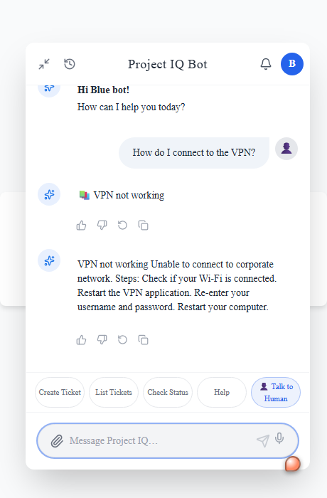
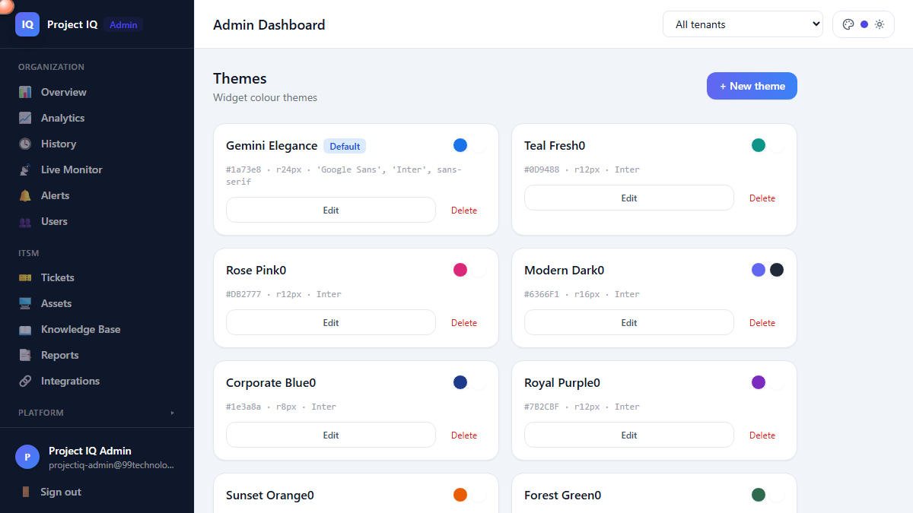
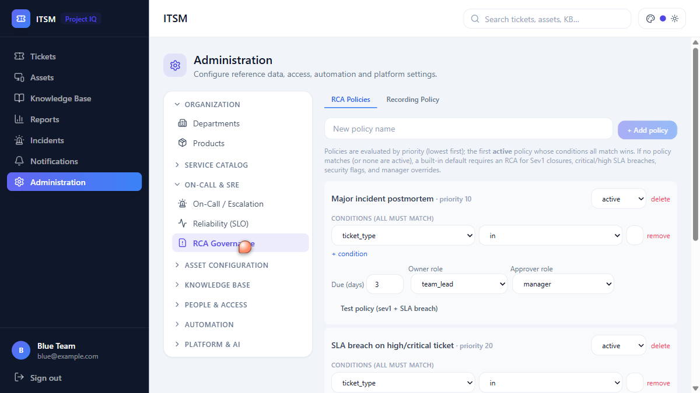

One platform, six connected experiences — an AI chatbot on the web and on mobile, a real-time operator console, tenant & super-admin control planes, and a full multi-tenant ITSM service with automation, AI enrichment and reporting. Built for scale, isolation and extensibility.

| Tool | What it does | Scope |
|---|---|---|
| Overview / Analytics | At-a-glance health, plus volumes, resolution & satisfaction trends over 7/30/90 days | Both |
| Deflection Analytics | Bot-resolved vs escalated, KB deflection — proof of self-service value | Both |
| Live Monitor / Inspector | Watch conversations in real time, or deep-dive one full transcript | Both |
| Operators | Provision, configure & manage support agents | Both |
| Knowledge Base | Manage articles, rebuild embeddings, web-crawl ingestion, gap analysis | Both |
| NLU Studio | Inspect & tune intents, retrain the model | Both |
| Themes | Brand the widget — colour, font, icon & radius, live | Both |
| Integrations | Teams / webhook marketplace, connected-service status, embed generator | Both |
| Observability | Service health & correlation-ID tracing across services | Both |
| Users | Directory live from IAM; create & assign roles | Super: any tenant |
| Organizations | View & manage tenant organizations across the platform | Super only |


| Concern | Tenant Admin | Super Admin |
|---|---|---|
| Data scope | Own organization only | Any tenant, or all aggregated |
| Conversations | Org's conversations | Selected tenant's, or all |
| Tickets & ITSM | Org's records | Any org's |
| Access grant | org_admin role | Platform-org membership / super_admin |
iam-{user}-{product}; switching product starts a fresh, isolated session.pip-audit in CI.| Service | Tests | What's covered |
|---|---|---|
| 🎫 ITSM Service | 370 | Tickets, KB, automation, reports, SLA/OLA/UC, on-call, incidents, SLO/error-budgets — row-level tenant isolation. |
| ⚙️ Action Server | 37 | IAM identity & JWT forwarding, login flows, analytics, session tokens. |
| 🔑 Common / IAM | 31 | Keycloak claims, role mapping, tenant-vs-platform admin, config loaders. |
| ⚡ Web API | 41 | Real-time room routing, JWT security, multi-tenant scope, storage/ITSM proxies. |
| 🧠 NLU / Conversation | 18 | Intent inventory, no cross-intent conflicts, stories & rules, pipeline config. |
| 🌍 Feature & platform | ~70 | i18n, deflection metrics, tracing, rate limiting, secret overrides. |
pytest on every push via GitHub Actions — core-platform suites are fully mocked/deterministic; the ITSM suite runs against ephemeral Postgres + Redis.